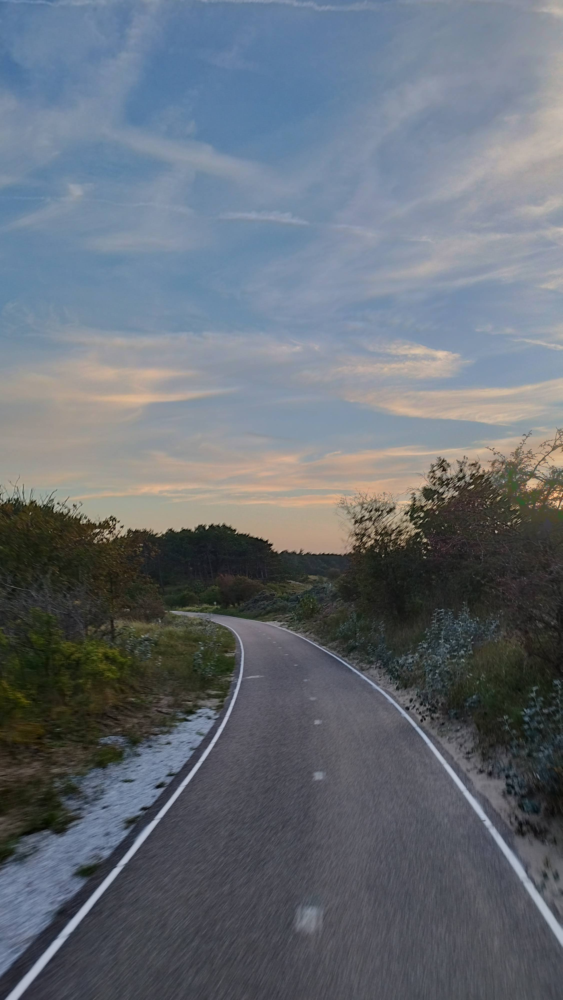
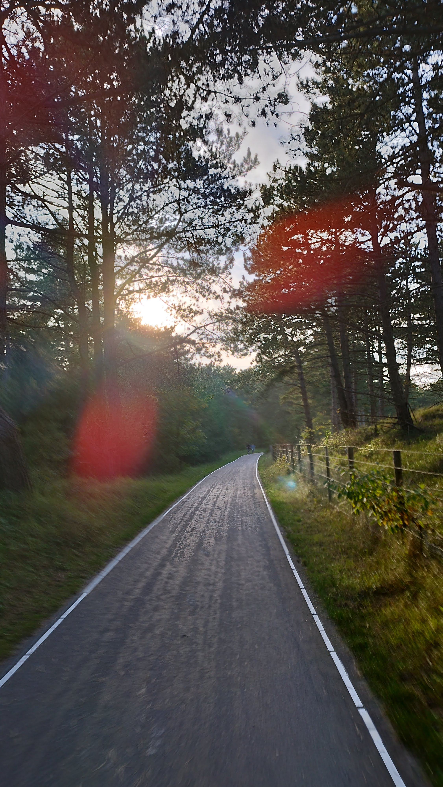
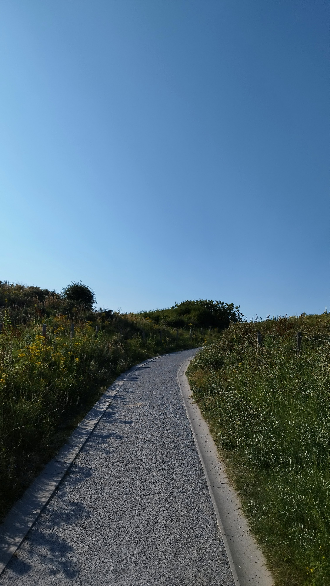

In fondo ai sentieri
Sentieri di luce,
continuo a incontrare,
solo.
Una vita promessa,
vedo,
in fondo a questi.
Migliaia di istantaneee,
proiettate in cielo,
mi prendono lo stomaco:
ora illusione perduta,
ora materia futura.
Cammino incerto
tra possibile e inevitabile.


